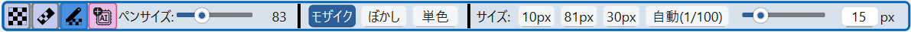
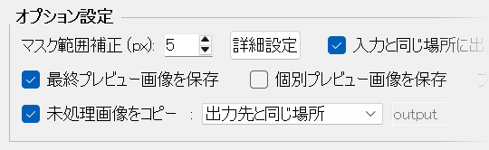
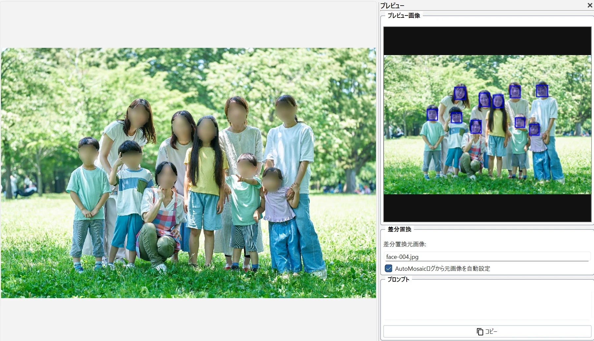
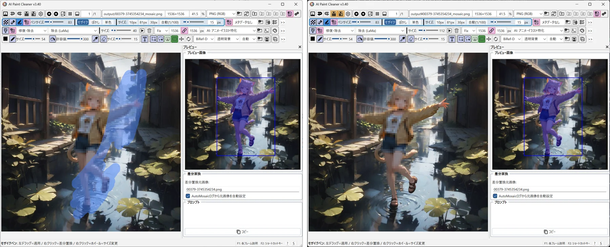

モザイク
なぞった範囲にモザイク・ぼかし・単色塗りをかける専用ツールです。右クリックでなぞった範囲は元に戻せる（差分置換）ので、AutoMosaicで処理した画像の仕上げに最適です。
ツールバー

123456789
| 1モザイク矩形 | 左ドラッグした四角形の範囲を処理します。右クリックでなぞると元に戻します。 |
| 2モザイクバー | 左ドラッグでなぞった帯状の範囲を処理します。右クリックでなぞると元に戻します。幅は右クリック＋ホイール。 |
| 3モザイクペン | 左ドラッグでなぞった範囲を処理します。ぐるっと囲むと内側までまとめて塗りつぶします。右クリックでなぞると元に戻します。 |
| 4AI自動選択 | ONにすると Shift＋左クリックで対象をAIが選び、その範囲を処理します。 |
| 5ペン／バーのサイズ | モザイクペンの太さ、モザイクバーの幅（右クリック＋ホイール）。 |
| 6種類 | モザイク／ぼかし／単色（M／Shift+M で切り替え）。 |
| 7サイズプリセット | よく使うモザイクの粗さ。値は設定で1〜99pxに変更できます（Shift+, / Shift+.）。 |
| 8自動 | 画像の長辺の1/100をモザイクサイズにします。 |
| 9サイズ | モザイクの粗さを細かく調整します（, / .）。 |
右クリックで元に戻す（差分置換）と、囲んだ内側の塗りつぶしは初期設定でONです。不要な場合は設定の「描画」でOFFにできます。
モザイクの種類
| 種類 | 内容 |
|---|---|
| モザイク | 通常のモザイク。設定で境界をぼかすかどうかを選べます。 |
| ぼかし | ガウスぼかしをかけます。 |
| 単色 | カラーパレットの色で塗ります。設定で「全面」か「枠だけ」を選べ、枠の幅も変えられます。 |
AutoMosaicとの連携
AutoMosaicで処理した画像を開くと、次の2つが自動で使える状態になります。
① AutoMosaicの処理画像を読み込む
- 1AutoMosaicで「最終プレビュー画像を保存」をON
AutoMosaicのオプション設定で有効にして処理すると、出力先に Preview フォルダができます。

- 2出力された画像をAI Paint Cleanerで開く
Preview フォルダと同じ場所にある処理済み画像を開きます。← → で次々に確認できます。

- 3プレビューと差分置換元が自動で表示
右サイドバーに、モザイクをかけた箇所のプレビューと、差分置換に使う元画像の名前が表示されます。Alt+P を押している間はプレビューをキャンバスにも表示できます。

② AutoMosaicの不要なモザイクを消す

1234| 1モザイクツール | モザイクツールを選びます。右クリックでなぞると差分置換（元に戻す）になります。インペイントのカテゴリ「差分置換」でも同じことができます。 |
| 2差分置換元画像 | AutoMosaicのログから元画像が自動で設定されます。違う画像のときは Ctrl+R で変更できます。 |
| 3右クリックでなぞる | 外したいモザイクを右クリックでざっとなぞります。 |
| 4元に戻る | なぞった範囲だけ元画像の画素に戻り、モザイクが消えます。足りない箇所は左ドラッグでモザイクを追加できます。 |
Alt+R を押している間は、参照中の元画像をキャンバスに表示して確認できます。
- プレビューの自動表示は設定の「AutoMosaicのPreview画像を自動表示」、元画像の自動設定は「AutoMosaicログから元画像を自動設定」で切り替えられます。